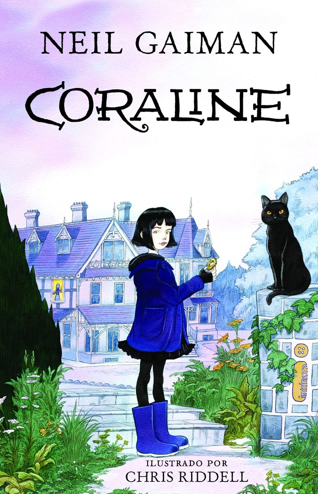

Coraline
Neil Gaiman
Gênero:Fanatasia e Terror| Ano: 2020| Páginas:224| Editora:Intrínseca
Sipnose:
Coraline conta a história de uma jovem garota que se muda com seus pais para uma nova casa. Enquanto explora sua nova residência, ela descobre uma porta que leva a um universo paralelo. Este outro mundo é inicialmente semelhante ao seu, mas logo revela ser um lugar sinistro onde seus “outros” pais, versões assustadoras e manipuladoras dos seus verdadeiros pais, tentam aprisioná-la.
“Fuja enquanto ainda tem ar nos seus pulmões, sangue nas veias e vida no seu coração. Fuja enquanto ainda é dona de sua mente e de sua alma.”
Sobre o autor:
Neil Gaiman foi citado no Dicionário de biografia literária como um dos dez maiores escritores pós-modernos vivos, tem mais de vinte livros publicados para leitores de todas as idades e já foi agraciado com inúmeros prêmios literários, incluindo o Hugo, o Bram Stoker e a Newbery Medal. Começou a carreira como jornalista, mas logo seu talento para construir tramas e universos únicos foi levado para o mundo dos quadrinhos, com a aclamada série Sandman, e, depois, para a ficção adulta e a infantojuvenil.